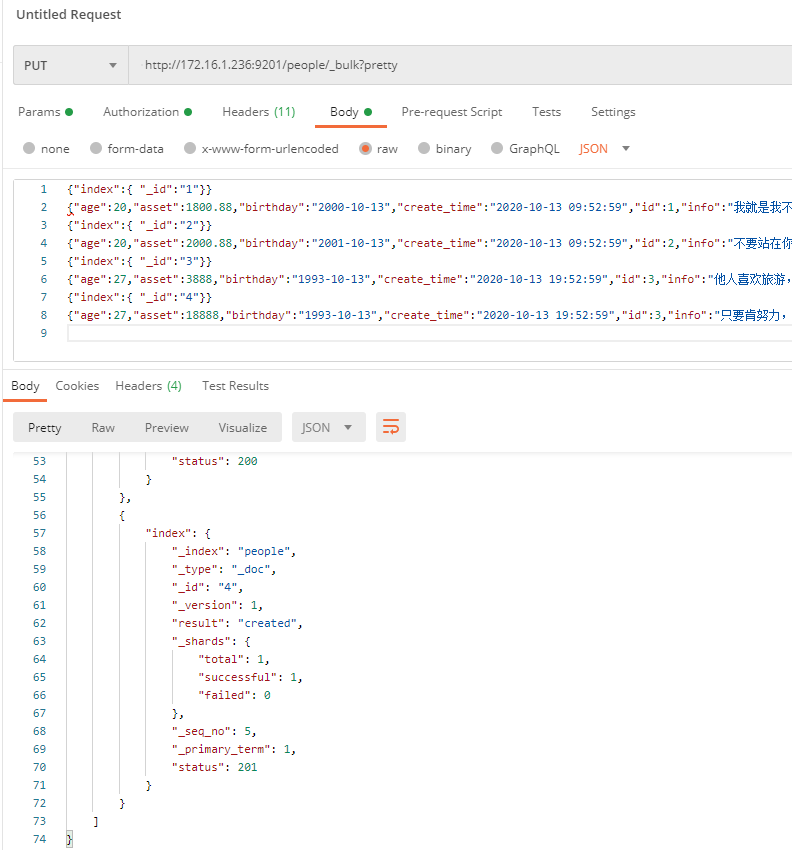
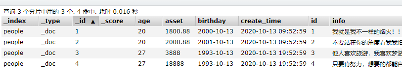

一、前言
Elasticsearch 也是支持脚本查询的。像查询的时候，有时简单的字段排序已经不满足我们的需求了，也可以使用脚本自定义表达式排序。
当然它也不只用来做排序而已，还有更新删除都是可以的。实战走起！！！
二、准备环境
先把索引和数据这些准备好。
1、创建索引
创建people索引
PUT http://172.16.1.236:9201/people |
简单的定义几个字段
2、加入数据
这里使用bulk api 批量导入数据
PUT http://172.16.1.236:9201/people/_bulk?pretty |
我这里使用的是postman导入的。

这里要注意一点就是postman在Headers 那里要设置 Content-Type:application/json。
导入之后，查看一下：

三、Script使用
本篇主题，ES默认使用的脚本语言是：Painless，还有可以使用：Lucene expression、mustache 都是内置的。
1、格式：
"script": { |
脚本的格式基本都是上面这样的，属性解析：
- lang： 脚本的语言，默认painless
- source： 也就是脚本的内容是
inline script，也可以为id，这个id不是文档的id，而是stored script的ID。stored script就是我们已经定义好的脚本，下面有讲到。 - params： 这个是存参数的对象
2、stored script
直接翻译过来就是脚本存储，简单的说我们先把脚本模板定义好，下次直接引用即可
定义stored 脚本
PUT http://172.16.1.236:9201/_scripts/add_asset |
定义一个叫做 add_asset 的stored script,内容的意思就是给资产（asset） 加上参数的值。
使用stored脚本
POST http://172.16.1.236:9201/people/_doc/1/_update |
这里script里面的id,就是stored script 的id，就是上面定义的add_asset。
脚本含义：给people索引下，id=1 的数据，资产加 100 。
3、inline script
细心的同学就会发现，文档id=2,也就是李四是2001 出生（birthday）的，创建时间2020年（当前），所以他的age应该是19才对。
我们使用脚本修正一下
POST http://172.16.1.236:9201/people/_doc/2/_update |
四、painless 语言的一些例子
先讲一些常用的吧
1、给已有的文档添加新字段
需求：比如我们现在想加一个 “hobby”(爱好) 和 “sex”(性别)的字段，并赋值。
POST http://172.16.1.236:9201/people/_update_by_query |
以上添加字段hobby，并赋值一个字符串数组：['看电影','听音乐','搬砖'],同时也添加 sex字段，值为男
2、移除数组字段某一项
现在需求又改了，id=1 张三这个人不喜欢 搬砖 这个爱好，要把它移除掉.
POST http://172.16.1.236:9201/people/_doc/1/_update |
先判断数组是否包含hobbyName这个内容，包含则通过数组索引进行删除。还有其他写法如下：
POST http://172.16.1.236:9201/people/_doc/1/_update |
还有一种简单粗暴，直接全部替换覆盖 ٩(๑❛ᴗ❛๑)۶
3、自定义返回脚本字段
例子1:自定义脚本字段
POST http://172.16.1.236:9201/people/_search |
自定义字段year-asset代表每个人的年薪，这个字段是随意定义的。
查询结果返回：
{ |
发现返回的只有我们定义的字段，其他的属性没有返回，可以加个参数_source。
例子2：结果集返回fields与_source数据
POST http://172.16.1.236:9201/people/_search |
_source 下面有两个属性：includes、excludes。
- includes 表示返回哪些字段，如果为空就返回所有
- excludes 表示哪些字段不需要返回
而query 也就是查询了，可以不要，我这里是只查询李四的。数据结果返回如下：
{ |
发现定义_source 就返回想要的数据了。
例子3：自定义多个脚本字段
在加一个birthday-year 自定义字段。
POST http://172.16.1.236:9201/people/_search |
这里多加了一个birthday-year只返回birthday的年份。
结果返回：
{ |
4、自定义脚本排序
有些时候需要一些复杂规则的排序就需要使用脚本来实现。如下
POST http://172.16.1.236:9201/people/_search |
上面的例子在实际中是没什么意义的，这里只是举个例子而已。就是查询所有数据，结果以 资产和年龄相乘 降序返回
5、简单更新字段
POST http://172.16.1.236:9201/people/_doc/1/_update |
修改id=1 的生日改为1999年，年龄改为21。
6、带判断的脚本更新
POST http://172.16.1.236:9201/people/_doc/1/_update |
过年回来，给优秀员工（id=1） 加1000 工资（只有当他的工资不高于30000时成立）。
7、Lambda 表达式
list.removeIf(item -> item == 2); |
脚本也支持lambda表达式，上面有用过。
8、查询脚本过滤
POST http://172.16.1.236:9201/people/_search |
只查询年龄大于25的
9、更多
实际开发不只这些，日期操作，定义脚本方法等等更多语法可参考，官方文档：《painless语法指南》
具体的Java api 调用可以看，下面这个Script类：
package org.elasticsearch.script; |
注意观察就会发现，它的构造方法对应上面的脚本格式
调用例子如：new UpdateRequest(indexName,id).script(new Script(...));
五、、Lucene expressions语言的一些表达式
只列举一些表达式
1、数值字段表达式
doc['field_name'].value //字段的值，作为 double |
当文档完全缺少该字段时，默认情况下该值将被视为0。您可以将其视为另一个值，例如doc['myfield'].empty ? 100 : doc['myfield'].value。
2、日期字段表达式
日期字段被视为自1970年1月1日以来的毫秒数
doc['field_name'].date.centuryOfEra // 世纪（1-2920000） |
3、geo_point类型表达式
['field_name'].empty //一个布尔值，指示该字段在doc中是否没有值。 |